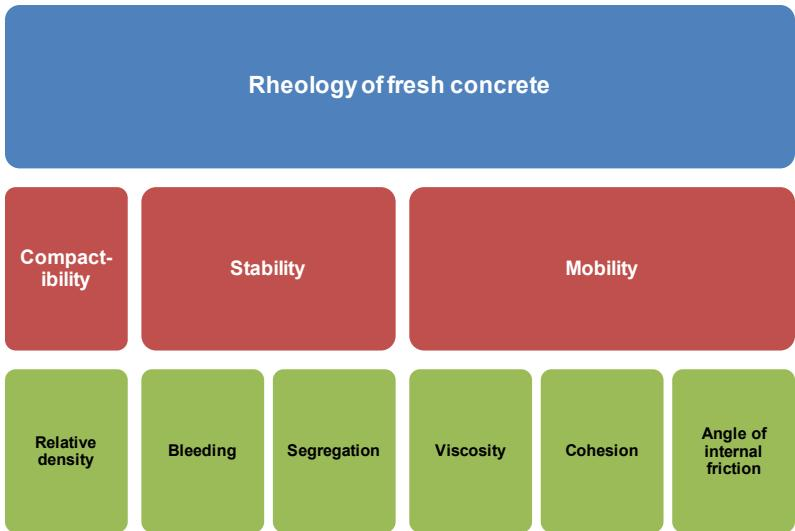
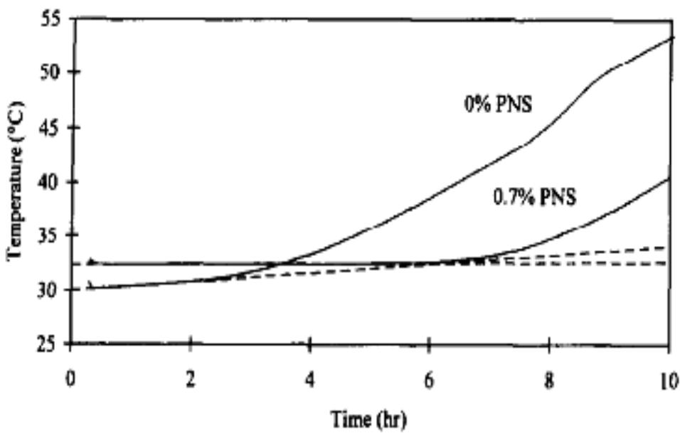
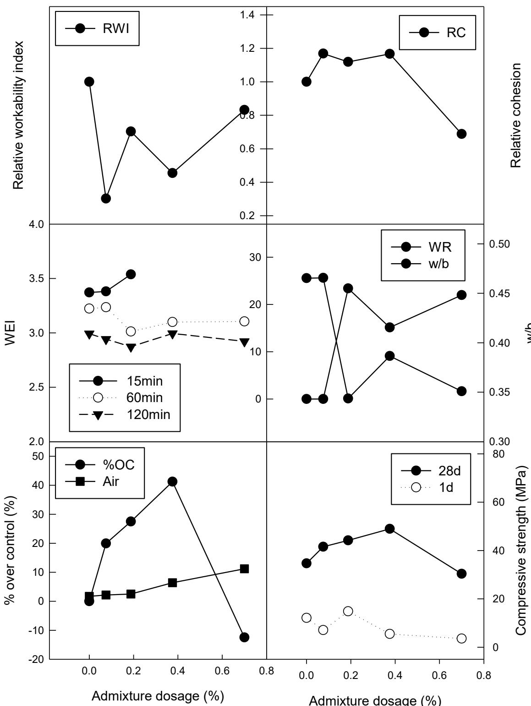
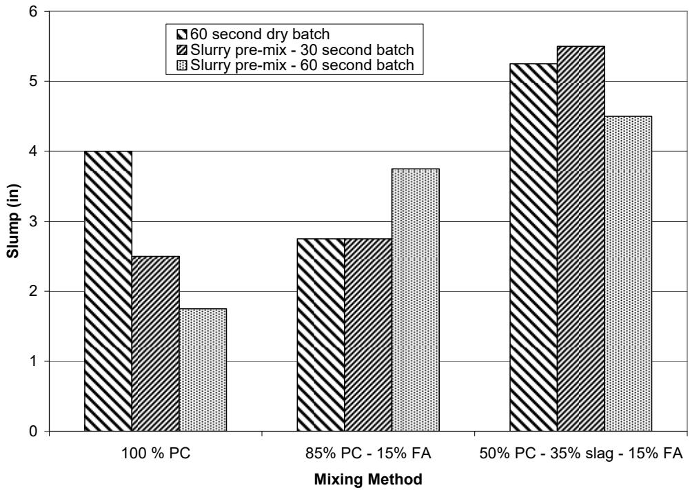
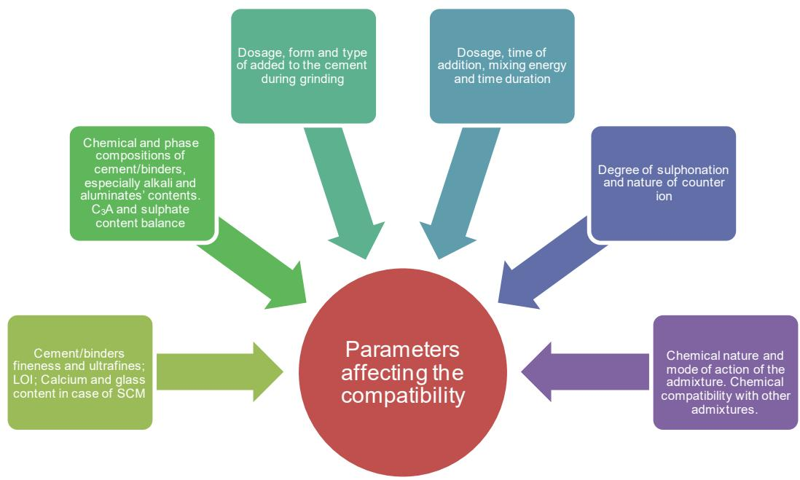

Fresh Concrete, Workability & Mixing
Fresh concrete is a composite material that must remain plastic and homogeneous during mixing, placement, consolidation, and finishing to ensure uniform distribution of ingredients and prevent segregation before the onset of setting and hardening. Workability, which defines the ease with which this fresh state can be handled, is fundamentally governed by the water-to-cement ratio, the volume of paste available to lubricate the aggregate skeleton, and the physical characteristics of the aggregates themselves [1] [2]. The rheological behavior and flowability of the mix are further modulated by the composition of the binder system, where supplementary cementitious materials can alter water demand through lubricating effects or increased particle absorption [3]. Chemical admixtures are frequently incorporated to modify these fresh properties by influencing hydration kinetics, particle dispersion, and surface tension, thereby allowing precise adjustments to water demand, setting time, and air content [4]. Achieving a uniform mixture requires careful control of mixing procedures, including the sequence of ingredient addition, mixing duration, and equipment type, as insufficient or excessive mixing can compromise homogeneity, hydration efficiency, and aggregate integrity [5] [6].
This overview of Fresh Concrete, Workability & Mixing from CP Tech Center reports also covers the following subtopics: False Set / Premature Stiffening, Retempering, Two-Stage Mixing, and Workability of Concrete.
Fresh Concrete, Workability & Mixing addresses the complex interplay between material flow, mixture stability, and processing techniques that define unhardened concrete performance. Workability of Concrete serves as the critical rheological benchmark that dictates the ease of mixing, placing, and finishing unhardened concrete while ensuring homogeneity and resistance to segregation. Two-Stage Mixing enhances fresh concrete workability and homogeneity by premixing cement paste before aggregate introduction to optimize hydration and interfacial transition zone quality. False Set / Premature Stiffening represents a critical workability disruption in fresh concrete where reversible rigidity develops prematurely without significant heat generation, thereby compromising the mixture’s consistency and flow characteristics before actual chemical setting occurs. Retempering restores the rheological consistency of unhardened concrete by reintroducing water to counteract premature stiffening, thereby directly addressing the workability requirements central to fresh concrete mixture performance.
Sources (10)
Sub-concepts (4)
Key findings
- Supplementary cementitious materials systematically altered workability and hydration kinetics, with fly ash reducing water demand and delaying set while slag increased water need but lowered peak heat of hydration [7] [3].
- Premature stiffening emerged as a dominant fresh-concrete issue in field applications, causing significant slump loss during transport that was mitigated by remix cycles, fly ash addition, or delayed admixture introduction [8] [5].
- Increasing mixing energy through higher shear speeds and longer durations systematically improved fresh-paste rheology and concrete homogeneity, though excessive mixing without retempering sharply reduced workability [9].
- Heat evolution monitoring provided a critical link for predicting setting time, thermal cracking risk, and mix compatibility, yet the industry lacked practical, field-ready calorimetry standards to utilize these data effectively [6].
- Air-void spacing factor proved to be the decisive indicator of freeze-thaw durability rather than total air content, with on-site adjustments enabling significant improvements in void structure [8].
- Admixture effectiveness in roller-compacted concrete was tightly linked to the water-to-binder ratio, requiring higher dosages than conventional mixes to achieve balanced cohesion and compactibility without compromising strength or introducing excess air [4].
Workability Optimization and Material Modifications
Evidence: 9 reports (8 primary)
Workability optimization relies on balancing the water-to-binder ratio and paste volume to provide sufficient lubrication for aggregate movement while maintaining cohesion [1] [2]. Material modifications such as supplementary cementitious materials and chemical admixtures alter rheological properties by influencing particle dispersion, water demand, and hydration kinetics [4] [3] [2]. Mixing procedures must be carefully controlled to ensure homogeneous distribution of ingredients without causing segregation or excessive breakdown of the aggregate structure [9] [5].
The following figure illustrates the key factors that influence the rheology of fresh concrete.

Factors influencing the rheology of concrete [4]The figure presents a hierarchical diagram titled ‘Rheology of fresh concrete’ that categorizes workability into three primary aspects: Compactibility, Stability, and Mobility. Beneath these categories, specific physical properties are listed as influencing factors, including Relative density, Bleeding, Segregation, Viscosity, Cohesion, and Angle of internal friction.
Research problem — The industry lacks practical, field-compatible methods for monitoring heat evolution during hydration, which prevents reliable prediction of workability loss and set times caused by material variations or environmental conditions [6]. Modern concrete mixes frequently suffer from premature stiffening and rapid slump loss due to particle agglomeration, complex interactions between supplementary cementitious materials and admixtures, and suboptimal mixing procedures that degrade uniformity and finishability [9] [7] [5]. Achieving reliable workability in low-water systems like roller-compacted concrete remains difficult because conventional chemical admixtures often fail to maintain cohesion and segregation resistance under harsh handling conditions [4]. Optimizing cementitious content is critical to balancing economic and environmental goals with the need for sufficient paste volume, as excessive cement usage offers no strength benefit while insufficient paste leads to consolidation difficulties and durability compromises [2].
The figure below illustrates how superplasticizers influence this process by modifying cement hydration kinetics to improve workability.

Effect of superplasticizer on cement hydration (adapted from Jolicoeur et al. 1998) [6]The figure plots temperature against time to demonstrate the heat evolution profiles of cement pastes containing different concentrations of PNS. This reduction in heat evolution is consistent with the use of superplasticizers, which mildly retard the setting of concrete and reduce heat generation in the setting period without affecting total heat.
State of the art — The field has shifted from static laboratory testing toward dynamic, process-control workflows that integrate blended cement selection with maturity-based strength modeling and computational stress simulation to manage the trade-offs between flow, setting speed, and early-age durability [3]. Optimization strategies increasingly rely on high-energy, two-stage mixing protocols and real-time moisture sensing to ensure uniform particle dispersion while minimizing energy consumption and avoiding over-mixing penalties [9] [5]. Designers now prioritize sustainable mix formulations by targeting specific paste-to-aggregate void ratios and utilizing supplementary cementitious materials to achieve required workability without excess water or cement content [2].
The following figure illustrates how different mixing protocols influence the mechanical response of the material by showing the effect of mixing methods on peak stress of cement paste.
 Effect of mixing methods on peak stress of cement paste [9]
Effect of mixing methods on peak stress of cement paste [9]
The figure plots Peak Stress (Pa) against Hydration Time (min) for four different mixing protocols: Hand, Paddle, Hand (Sieved Powder), and High Energy Blender. Mixing methods that likely leave agglomerates of cement paste intact result in significantly higher peak stresses compared to high-energy or sieved powder methods which ensure uniform particle dispersion.
Findings from the reports
- Replacing ordinary Portland cement with Class C fly ash consistently lowered water demand and improved flowability, whereas ground-granulated blast-furnace slag increased water requirements due to higher internal friction and particle irregularity [3].
- Ternary blends combining fly ash and slag balanced the opposing effects of these supplementary cementitious materials, achieving fresh-concrete consistency comparable to plain ordinary Portland cement while lowering peak heat of hydration [3].
- A drop in ambient temperature from 70°F to 50°F more than doubled initial set times for all blended mixes, while hot weather conditions produced equal or reduced slump loss relative to ordinary Portland cement, preserving placement time [3].
- Mixes with a belt-placer slump of 1.75–2 inches lost roughly half their workability during transport, ending at 0.75–1 inch by the time they reached the paver after approximately 30 minutes [5].
- Incorporating fly ash acted as a low-range water reducer that mitigated premature stiffening and supported higher penetration sums, while ternary blends broadened the optimum strength window by balancing shrinkage and fresh properties [5].
- Monitoring cement hydration through exothermic heat evolution provided a critical link for controlling workability and setting but lacked practical field standards due to the cost and complexity of existing calorimetry methods [6].
- Polycarboxylate water reducers at recommended dosages yielded acceptable slump without compromising early strength, whereas overdosing caused severe retardation of three-day compressive strength compared to adherence to specified dosages [7].
- Raising mixing energy by increasing speed or time lowered plastic viscosity and thixotropic area, producing a more uniform slurry and accelerating early hydration while requiring a minimum of roughly 60 seconds for acceptable homogeneity [9].
- A high-shear two-stage mixing protocol delivered approximately a ten-percent increase in 28-day compressive strength and tighter strength dispersion, though it caused a modest loss of slump and reduced the effectiveness of air-entraining admixtures [9].
- Loss of workability and consistency accounted for roughly one-third of all mix-related causes of fresh-concrete problems, with seventy-eight percent of surveyed projects reporting that the difficulty persisted throughout construction [8].
- The air-void spacing factor proved to be a more decisive indicator of durability than total air content, with portable Air Void Analyzer measurements enabling real-time admixture adjustments to achieve acceptable freeze-thaw performance [8].
- Chemical admixtures in roller-compacted concrete were dosage-dependent and required higher doses than standard manufacturer recommendations for normal concrete to achieve desired cohesion and compaction windows [4].
- Water-reducing agents achieved up to approximately 30% water reduction, which lowered the water-to-binder ratio and boosted early strength at moderate dosages but introduced excess air and stickiness when overdosed [4].
- Mixes with very low paste contents produced zero slump and could not be consolidated, indicating that a minimum paste volume was essential for workability regardless of admixture use [2].
- Fresh concrete required roughly one-and-a-quarter to one-and-a-half times more paste than the aggregate void volume to achieve workable mixes, below which water-reducing admixtures offered no benefit [2].
Novelty & rigor — Research has shifted from prescriptive mix design to data-driven frameworks that predict fresh-state performance by correlating cement chemistry and supplementary cementitious material characteristics with heat evolution and setting times [7]. A novel rheological approach for roller-compacted concrete quantifies workability through distinct indices of cohesion, compactibility, and segregation resistance, enabling the systematic evaluation of chemical admixtures across multiple performance attributes [4]. Methodological innovations include the use of high-shear slurry preparation to optimize paste uniformity and the adoption of a mobile laboratory equipped with real-time diagnostics for continuous quality control and immediate mix adjustments [9] [8].
The figure below illustrates the relative properties of these P-19 admixed concrete mixtures.

Relative properties of P-19 admixed concrete mixtures at various dosages. [4]The figure displays a multi-panel analysis of how an air-entraining admixture affects fresh and hardened concrete properties as the dosage increases from 0 to approximately 0.7%. Visual data indicates that increasing the admixture dosage leads to a reduction in water-to-cement ratio (w/b) and workability index, while simultaneously entraining air and initially increasing compressive strength.
Reported values
| Parameter | Value | Context | Source |
|---|---|---|---|
| air entrainment | 11% | using air-entraining agents (AEA) | [4] |
| water reduction | 0-30% | roller-compacted concrete (RCC) with water-reducing agents | [4] |
| compressive strength | 10 percent% | two-stage mixed concrete at 28 days | [9] |
| compressive strength increase | 10 percent% | two of the three mixtures investigated at 28 days | [9] |
| mixing time | 30 seconds | optimal two-stage mixing process recommendation | [9] |
| air content (average) | 5.2% | six tests conducted ahead of the paver | [8] |
| air content (average) | 5.7% | seven tests conducted during demonstration ahead of the paver | [8] |
| air content (average) | 6.0% | 10 tests conducted ahead of the paver during demonstration | [8] |
| curing temperature | 50°F | binary and ternary cement concrete curing conditions | [3] |
| curing temperature | 70°F | binary and ternary cement concrete curing conditions | [3] |
| air content | about 6.0% | concrete mixture formulation without difficulties | [5] |
| air content | about 7.5% | concrete mixture formulation with workability problems (harsh) | [5] |
| fly ash content in ternary blend | 0% to 30% | optimum mix for 180-day compressive strength model | [5] |
| paste content | 400 pcy | low paste content mixes | [2] |
| paste content | 500 pcy | low paste content mixes | [2] |
29 more distinct values omitted here; the full span-verified set is in the quantities sidecar.
Across the reviewed reports, optimizing fresh concrete workability requires balancing supplementary cementitious material selection with precise admixture calibration, as fly ash generally reduces water demand and improves flow while slag increases it, necessitating polycarboxylate-based reducers to maintain consistency without compromising early strength. Mixing protocols significantly influence rheological outcomes, with high-shear two-stage mixing enhancing homogeneity and compressive strength but requiring careful time management to prevent workability loss that may necessitate retempering. Achieving adequate workability also depends on maintaining a minimum paste volume relative to aggregate voids and managing temperature effects, as insufficient paste renders admixtures ineffective while thermal variations systematically alter set times and slump retention across different binder systems. [9] [7] [3] [5] [2]
The impact of these varying protocols on flow characteristics is illustrated in the following figure.

Effects of mixing method on the slump of fresh concrete [9]The figure displays a bar chart comparing the slump values for three different binder compositions under three distinct mixing protocols. For each composition, the two-stage slurry pre-mix methods generally result in higher or comparable workability compared to the standard dry batch process.
Implications — Mix designers must treat supplementary cementitious materials and admixture dosages as interdependent variables, verifying compatibility through testing to balance workability, early-age strength, and heat evolution rather than relying on standard Portland cement assumptions [7] [3]. Optimizing mixing energy or employing two-stage sequences can enhance rheological properties and strength consistency, but practitioners must carefully manage the resulting reduction in entrained air to maintain durability targets [9]. Achieving consistent workability requires shifting from isolated mix-design checks to an integrated quality regime that utilizes real-time monitoring and standardized testing protocols to adapt to material variability and environmental conditions [8] [5].
The figure below illustrates how different mixing methods influence the air content in fresh concrete.
 Effects of mixing method on the air content of fresh concrete [9]
Effects of mixing method on the air content of fresh concrete [9]
The figure displays a bar chart comparing the percentage of entrained air in three different binder mixtures using three distinct mixing protocols. This reduction in entrained air is attributed to the limited ability of fine binder materials to entrap air during the slurry mixing phase, a critical factor for ensuring durable concrete.
Limitations — Optimization strategies and predictive models are often restricted to narrow ranges of specific materials, such as limited clinker types or aggregate gradations, which prevents reliable extrapolation to other sources or broader mix designs [7] [3] [2]. Practical application is hindered by the lack of standardized, cost-effective field testing methods for workability and heat evolution, as well as unresolved compatibility issues between certain admixtures and cement chemistries that can cause premature stiffening [8] [6]. Laboratory findings frequently fail to translate directly to field conditions due to uncontrolled variables like climatic fluctuations and mix-to-mix variability, while aggressive mixing or high admixture dosages introduce trade-offs such as reduced air content or strength loss that current assessment tools do not accurately capture [4] [9] [5].
The following figure illustrates the key factors that influence cement-chemical admixture compatibility.

Factors affecting cement-chemical admixture compatibility [4]The figure displays a central red circle labeled “Parameters affecting the compatibility” surrounded by six colored boxes pointing inward. These surrounding factors include chemical admixture properties, cement composition and fineness, and mixing procedures such as dosage and time of addition. This diagram illustrates how material characteristics and processing variables interact to determine whether an admixture performs as intended within a specific concrete mix.
Mixing Methodologies and Process Control
Evidence: 1 report (1 primary)
Research problem — Construction-site handling practices, particularly retempering and deviations from designed water-cementitious material ratios, can severely undermine the durability of concrete pavements despite laboratory predictions [10]. There is a critical need to understand how on-site mixing adjustments and process control variations outweigh the intrinsic benefits of supplementary cementitious materials in determining long-term service life under freeze-thaw exposure [10].
The figure below illustrates a practical example of this issue, showing evidence of retempering identified through petrographic examination.
 Example of retempering noted via petrographic examination [10]
Example of retempering noted via petrographic examination [10]
The image displays a photomicrograph of hardened concrete, revealing the internal microstructure including coarse aggregate particles and voids. Red arrows point to distinct boundaries within the cement paste matrix that appear as curved or irregular lines separating regions of different texture.
Findings from the reports
- Found that improper water addition or deviation from mix designs during mixing erodes workability control and accelerates scaling, even when admixtures and slag improve handling [10].
- Observed that retempering, defined as the addition of water or a water-rich mix after initial batching, compromised workability and durability in field applications [10].
- Measured water-cementitious material ratios markedly above design specifications at scaling locations, confirming proportioning inconsistencies during mixing [10].
Related concepts
In this hierarchy
- Parent: Concrete Materials & Mixtures
- Child: False Set / Premature Stiffening
- Child: Retempering
- Child: Two-Stage Mixing
- Child: Workability of Concrete
Related by shared evidence
- Supplementary Cementitious Materials — shares 9 reports
- Cement Hydration — shares 8 reports
- Freeze-Thaw Durability — shares 8 reports
- Cement-Admixture Compatibility — shares 7 reports
- Cementitious Materials & Chemistry — shares 7 reports
- Chemical Admixtures for Concrete — shares 7 reports
- Concrete Materials & Mixtures — shares 7 reports
- CP Tech Center Reports — shares 7 reports
Similar topics
- Workability of Concrete
- Two-Stage Mixing
- Retempering
- Concrete Materials & Mixtures
- False Set / Premature Stiffening
- Quality Management-Concrete
- Cement Hydration
- Chemical Admixtures for Concrete
References
- P. Vosoughi, S. Tritsch, H. Ceylan, and P. Taylor, "Lifecycle Cost Analysis of Internally Cured Jointed Plain Concrete Pavement," National Concrete Pavement Technology Center, Ames, IA, Rep. TR-676, 2017. [Online]. Available: https://publications.iowa.gov/27038/
- P. Taylor, F. Bektas, E. Yurdakul, and H. Ceylan, "Optimizing Cementitious Content in Concrete Mixtures for Required Performance," National Concrete Pavement Technology Center, Ames, IA, 2012. [Online]. Available: https://www.intrans.iastate.edu/wp-content/uploads/2018/03/taylor_ocm_w_cvr2.pdf
- K. Wang and Z. Ge, "Evaluating Properties of Blended Cements for Concrete Pavements," Department of Civil, Construction and Environmental Engineering, Iowa State University, Ames, IA, 2003. [Online]. Available: https://www.intrans.iastate.edu/wp-content/uploads/2018/03/blended_cements-1.pdf
- C. V. Hazaree, H. Ceylan, P. Taylor, K. Gopalakrishnan, K. Wang, and F. Bektas, "Use of Chemical Admixtures in Roller-Compacted Concrete for Pavements," National Concrete Pavement Technology Center, Ames, IA, 2013. [Online]. Available: https://www.intrans.iastate.edu/wp-content/uploads/2018/03/rcc_admixture_w_cvr1.pdf
- S. Schlorholtz, K. Wang, J. Hu, and S. Zhang, "Materials and Mix Optimization Procedures for PCC Pavements," CTRE, Iowa State University, Ames, IA, Rep. TR-484, 2006. [Online]. Available: https://www.intrans.iastate.edu/wp-content/uploads/2018/03/mco-final.pdf
- K. Wang, Z. Ge, J. Grove, J. M. Ruiz, and R. Rasmussen, "Developing a Simple and Rapid Test for Monitoring the Heat Evolution of Concrete Mixtures (Phase 3)," CTRE, Iowa State University, Ames, IA, Rep. FHWA Project 17 (Phase I), 2006. [Online]. Available: https://www.intrans.iastate.edu/wp-content/uploads/2018/03/CalorimeterReportPhaseIII.pdf
- P. Tikalsky, V. Schaefer, K. Wang, B. Scheetz, T. Rupnow, A. St. Clair, M. Siddiqi, and S. Marquez, "Development of Performance Properties of Ternary Mixes, Phase 1," Center for Transportation Research and Education, Ames, IA, Rep. TPF-5(117), 2007. [Online]. Available: https://www.intrans.iastate.edu/research/completed/development-of-performance-properties-of-ternary-mixes-phase-1/
- J. Grove, G. Fick, T. Rupnow, and F. Bektas, "Material and Construction Optimization for Prevention of Premature Pavement Distress in PCC Pavements," National Concrete Pavement Technology Center, Ames, IA, Rep. TPF-5(066), 2008. [Online]. Available: https://www.intrans.iastate.edu/wp-content/uploads/2018/03/mco-final.pdf
- T. D. Rupnow, V. R. Schaefer, K. Wang, and B. L. Hermanson, "Improving PCC Mix Consistency and Production Rate through Two-Stage Mixing," Center for Transportation Research and Education, Ames, IA, Rep. TR-505, 2007. [Online]. Available: https://www.intrans.iastate.edu/wp-content/uploads/2018/03/two-stage-mix-1.pdf
- S. Schlorholtz and R. D. Hooton, "Deicer Scaling Resistance ... Containing Slag Cement, Phase 1: Site Selection and Analysis of Field Cores," National Concrete Pavement Technology Center, Ames, IA, Rep. TPF-5(100), 2008. [Online]. Available: https://www.cptechcenter.org/wp-content/uploads/2018/03/schlorholtz_deicing_phase1.pdf
Feedback on this page